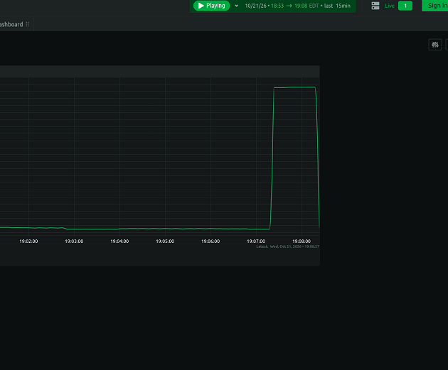
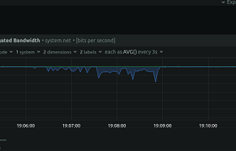
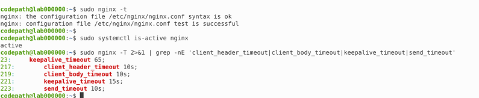
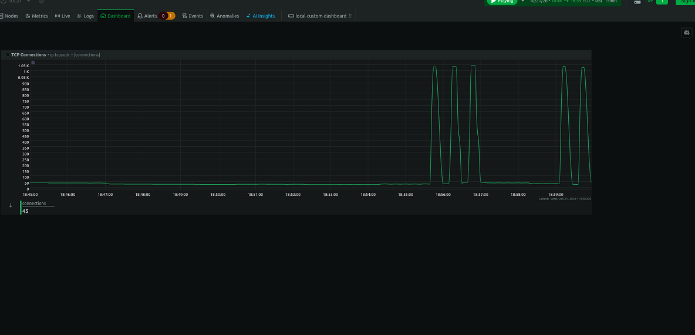

Cybersecurity / Network Security
Testing DoS Mitigation with Nginx
For this project, I used my Azure Ubuntu VM to test a Slowloris DoS attack against Nginx. I wanted to see what happens when a server gets hit with a bunch of slow connections and what I could do to help protect it. I used Netdata to watch the TCP connections and network traffic, then added timeout settings to Nginx and ran the test again to compare the results.
My setup
- Microsoft Azure virtual machine
- Ubuntu Linux
- Nginx web server
- Slowloris test tool
- Netdata monitoring dashboard
- TCP Connections and Network Traffic graphs
I did the testing inside my Azure VM and used
127.0.0.1 as the target. This is the loopback address,
meaning the test was aimed at the same machine running Nginx.
That let me observe the results in my own lab.
What is a DoS attack?
A Denial-of-Service (DoS) attack is when someone tries to make a website or service unavailable by using up its resources. A Distributed Denial-of-Service (DDoS) attack has the same general goal, but uses multiple sources to send traffic or requests toward the target.
Some different types of DoS/DDoS attacks are:
- UDP floods: Send large amounts of UDP traffic to consume network bandwidth or system resources.
- SYN floods: Send many TCP connection requests that can leave server resources tied up before connections are fully established.
- HTTP floods: Send large numbers of HTTP requests to overwhelm a web server or application.
- Slowloris: Keep HTTP connections open by sending request headers slowly, potentially using up the server's available connections.
- DNS amplification: Abuse DNS responses to direct a larger volume of traffic toward a target.
For this project, I focused on Slowloris. Instead of just sending a huge amount of traffic, it tries to keep connections open by sending incomplete HTTP headers slowly. If enough connections stay open, the web server can have a harder time handling new requests.
Setting up Netdata
Before starting the attack, I checked that Nginx was running
and that slowloris-run was installed on my Azure VM.
I then installed Netdata and opened its dashboard in Firefox
using http://127.0.0.1:19999.
I used the TCP Connections graph to watch the connection count and the Network Traffic graph to see changes in network activity. Having both graphs helped me compare what happened during each test.
Attack 1: Unprotected test
First, I ran Slowloris with 500 sockets before adding my custom Nginx timeout settings.
slowloris-run 127.0.0.1 -s 500
During the unprotected test, the TCP Connections graph spiked to around 1,000 connections. What stood out to me was that the graph stayed elevated for longer periods before dropping and then rising again.

Figure 1: TCP Connections during the unprotected Slowloris test.

Figure 2: Network Traffic during the unprotected Slowloris test.
Adding Nginx timeout settings
After the first test, I edited the Nginx configuration and added four timeout settings to help manage slow or inactive client connections.
client_header_timeout 10s;client_body_timeout 10s;keepalive_timeout 15s;send_timeout 10s;
The setting I was most interested in was
client_header_timeout 10s; because Slowloris sends
request headers slowly. This setting limits how long Nginx waits
to receive the complete request header.
I checked the configuration with sudo nginx -t
and reloaded Nginx after the test passed. I also confirmed the
service was active and that the web server returned an HTTP
response.

Figure 3: My Nginx timeout configuration.
Attack 2: Protected test
After applying the settings, I ran the same Slowloris command again with 500 sockets and watched the same Netdata graphs.
The protected graph still showed spikes close to 1,000 connections. However, I noticed that the connection count dropped toward the baseline more frequently instead of staying elevated for as long as it did in my unprotected test.

Figure 4: TCP Connections during the protected Slowloris test.

Figure 5: Network Traffic during the protected Slowloris test.
Comparing both tests
The biggest difference I noticed was how long the connections stayed elevated. In the unprotected test, the graph spiked and stayed flat near the top for longer before dropping and going back up. In the protected test, the graph went up and down more frequently.
Both tests still reached around 1,000 connections, so the peak count alone doesn't prove that the attack was stopped. The different patterns suggest that the timeout settings may have affected how long connections stayed open, but the graphs alone can't confirm exactly why the connections dropped.
This helped me understand why it's important to compare a baseline with a protected test instead of just looking at one graph. Checking Nginx logs for request header timeout events would provide additional evidence of how the rules behaved.
What I learned
This project gave me hands-on experience testing a DoS attack in my Azure VM, changing Nginx configuration settings, and monitoring network activity with Netdata. I learned that Slowloris works by keeping connections open slowly instead of relying only on a large volume of traffic.
I also learned that adding security settings is only part of the job. You need to test the changes, compare the results, and check logs before deciding how effective the mitigation actually is.